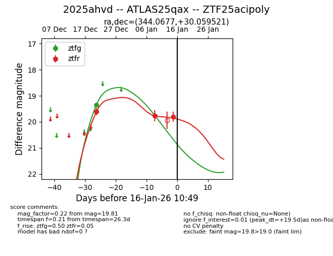
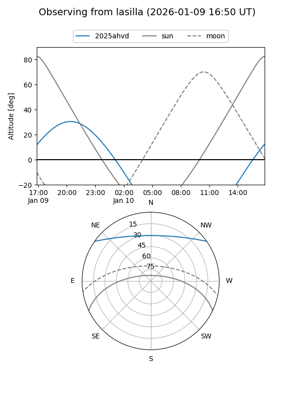
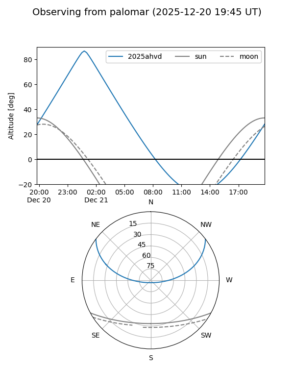
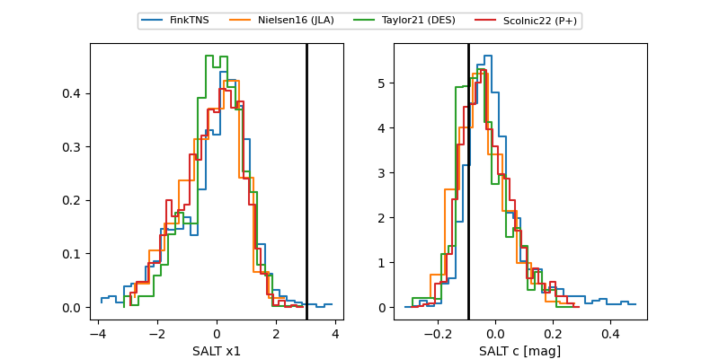

2025ahvd
Target 2025ahvd at 2025-12-23 03:23
Aliases and brokers:
FINK: fink-portal.org/ZTF25acipoly
Lasair: lasair-ztf.lsst.ac.uk/objects/ZTF25acipoly
ALeRCE: alerce.online/object/ZTF25acipoly
TNS: wis-tns.org/object/2025ahvd
YSE: ziggy.ucolick.org/yse/transient_detail/2025ahvd
alt names
ZTF25acipoly (ztf,fink_ztf)
2025ahvd (tns,yse)
ATLAS25qax (atlas)
Coordinates:
equatorial (ra, dec) = 344.0677,+30.05952
equatorial (HMS+DMS) = 22:56:16.24,+30:03:34.27
galactic (l, b) = (95.1627,-26.52965)
Flags:
Photometry:
last ztfg=19.36, ztfr=19.61
1 ztfg, 1 ztfr detections
Lightcurve

Visibility


Additional plots
